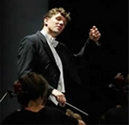

Krashna Musika
The Delft Student Music Society was founded in 1968, merging two student choirs and a student orchestra. Two years later, the Slavonic name 'Krashna Musika' was added, which means 'beautiful music'. At Krashna Musika, members can play music in a symphony orchestra, in a choir and as a chamber music member. Krashna Musika is not afraid of large projects and in recent years performed a.o. the War Requiem by Britten, the Brahms requiem and the Johannes Passion.
For more than 25 years, the orchestra has been inspired by Daan Admiraal. He studied the oboe at the Amsterdam Conservatoire, where he performed his soloist exam in 1973, obtaining the 'Zilveren Vriendenkrans'. In 1979, he graduated in orchestral conducting working with the Residentie Orchestra, having Louis Stotijn as his teacher. Since 1981, Daan Admiraal is the conductor of the Krashna Musika symphony orchestra. Until 1993, he was the conductor of the Krashna choir as well. Besides, he is conductor of the VU orchestra in Amsterdam, the 'Haags Toonkunst Koor' in The Hague, the Helikon orchestra and 'de Philharmonie'.
On Friday night, the orchestra will be conducted by Chris Pouw. Chris Pouw is the choir conductor of Krashna since 18th of September, 2008. Next to his studies in Musicology at the Utrecht University, in 2000, he obtained his diploma in choir and orchestral conducting at the Amsterdam Conservatoire, studying with Daniel Reuss. Besides, he had lessons with a.o. Jurjen Hempel and Roland Kieft and with the BBC Philharmonic Orchestra. Chris Pouw is the official conductor of the Arezzo Ensemble, the Arion Ensemble, the 'Haags Vocaal Ensemble', I Romantici and chamber choir Sjanton.